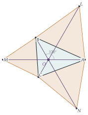

Given that \(\alpha = \mathrm{e}^{\mathrm{i}\pi/3}\), prove that \(1 + \alpha^2 = \alpha\).
A triangle in the Argand plane has vertices \(A\), \(B\), and \(C\) represented by the complex numbers \(p\), \(q\alpha^2\) and \(-r\alpha\) respectively, where \(p\), \(q\) and \(r\) are positive real numbers. Sketch the triangle \(ABC\).
Three equilateral triangles \(ABL\), \(BCM\) and \(CAN\) (each lettered clockwise) are erected on sides \(AB\), \(BC\) and \(CA\) respectively. Show that the complex number representing \(N\) is \((1 - \alpha)p - \alpha^2r\) and find similar expressions for the complex numbers representing \(L\) and \(M\).
Show that lines \(LC\), \(MA\) and \(NB\) all meet at the origin, and that these three line segments have the common length \(p + q + r\).
The hook
Three villages want to build a road network connecting all of them, as short as possible. Where should the junction go? In about 1640 Pierre de Fermat posed the problem of finding the point \(P\) inside a triangle that minimises \(PA + PB + PC\), and Evangelista Torricelli solved it: it is the point from which the three sides are seen at angles of \(120^\circ\).
This question uses complex numbers to prove a beautiful construction of that point. Build an equilateral triangle outwards on each side of the triangle, and join each new apex to the opposite vertex of the original. The three lines meet at a single point, the Fermat point, and all three have the same length, which is the minimum total road length. With complex numbers and one identity about \(e^{\mathrm{i}\pi/3}\), the whole thing is a few lines of algebra.
Before you start
Where are \(A\), \(B\) and \(C\)? What are their arguments? What angles do \(OA\), \(OB\) and \(OC\) make with each other?
\(A = p\) lies on the positive real axis (argument \(0^\circ\)). \(B = q\alpha^2 = qe^{2\pi\mathrm{i}/3}\) has argument \(120^\circ\). \(C = -r\alpha = re^{\mathrm{i}\pi}e^{\mathrm{i}\pi/3}\) has argument \(240^\circ\). So the origin is a point inside the triangle from which the three vertices are seen at \(120^\circ\) to one another, at distances \(p\), \(q\) and \(r\). The origin is the Fermat point, by construction; the question shows that the equilateral-triangle construction finds it.
Working it through
Stage 1 The key identity
\(\alpha^3 = e^{\mathrm{i}\pi} = -1\), so \(\alpha\) is a root of \(z^3 + 1 = (z + 1)(z^2 - z + 1)\). Since \(\alpha \neq -1\), \(\alpha^2 - \alpha + 1 = 0\), that is, \(1 + \alpha^2 = \alpha\).■
Two consequences will be useful: \(1 - \alpha = -\alpha^2\), and \(\alpha - \alpha^2 = 1\). Also \(1 - \alpha = \frac12 - \frac{\sqrt3}{2}\mathrm{i} = e^{-\mathrm{i}\pi/3}\), the complex conjugate of \(\alpha\).
Stage 2 Equilateral triangles as rotations
Triangle \(CAN\) is equilateral, lettered clockwise. If you stand at \(C\), how do you get from \(A\) to \(N\)? Express \(N - C\) in terms of \(A - C\).
Going clockwise round \(C\), \(A\), \(N\), the point \(N\) is obtained by rotating \(A\) about \(C\) through \(60^\circ\) clockwise. Multiplying by \(e^{-\mathrm{i}\pi/3} = 1 - \alpha\) rotates by \(60^\circ\) clockwise, so \[\begin{aligned} N = C + (1 - \alpha)(A - C) &= -r\alpha + (1 - \alpha)(p + r\alpha) \\ &= (1 - \alpha)p + r(\alpha - \alpha^2 - \alpha) = (1 - \alpha)p - \alpha^2r. \qed \end{aligned}\] (Rotating clockwise rather than anticlockwise puts \(N\) on the far side of \(CA\) from the origin, outside the triangle.)
Find \(L\) and \(M\) in the same way, and simplify using the identities from Stage 1.
Similarly \(L = A + (1 - \alpha)(B - A)\) and \(M = B + (1 - \alpha)(C - B)\): \[\begin{aligned} L &= p + (1 - \alpha)(q\alpha^2 - p) = \alpha p + (\alpha^2 - \alpha^3)q = \alpha p + (\alpha^2 + 1)q = \alpha(p + q), \\ M &= q\alpha^2 + (1 - \alpha)(-r\alpha - q\alpha^2) = q\alpha^3 + r(\alpha^2 - \alpha) = -q - r. \end{aligned}\] And using \(1 - \alpha = -\alpha^2\), \(N = -\alpha^2p - \alpha^2r = -\alpha^2(p + r)\).
Stage 3 Three lines through the origin
Compare \(L = \alpha(p + q)\) with \(C = -r\alpha\). What do you notice? Do the same for \(M\) and \(A\), and for \(N\) and \(B\).
\(L\) is a positive multiple of \(\alpha\) and \(C\) is a negative multiple of \(\alpha\). So \(L\) and \(C\) lie on opposite sides of \(O\) on the same line through \(O\), and the segment \(LC\) passes through the origin, with length \(|L - C| = |\alpha|(p + q + r) = p + q + r\).
Likewise \(M = -(q + r)\) and \(A = p\) lie on the real axis on opposite sides of \(O\), so \(MA\) passes through \(O\) with length \(p + q + r\). And \(N = -\alpha^2(p + r)\), \(B = q\alpha^2\) lie on the line through \(O\) in the direction \(\alpha^2\), on opposite sides, so \(NB\) passes through \(O\) with length \(p + q + r\).■

Looking back
Rotation is multiplication. Building an equilateral triangle meant rotating one vertex about another by \(60^\circ\), which is multiplication by \(e^{\pm\mathrm{i}\pi/3}\).
Clever coordinates. Placing the Fermat point at the origin, with the vertices along the directions \(1\), \(\alpha^2\), \(-\alpha\), made every expression collapse.
One identity, used repeatedly. Every simplification came from \(\alpha^2 - \alpha + 1 = 0\) and \(\alpha^3 = -1\).
What’s really going on
Why should \(PA + PB + PC\) be smallest at the point where the sides subtend \(120^\circ\)? Here is a lovely argument. Rotate the whole picture about \(B\) by \(60^\circ\), sending \(A\) to \(L'\) (the apex of an equilateral triangle on \(AB\)) and \(P\) to \(P'\). Triangle \(BPP'\) is equilateral, so \(PB = PP'\), and \(PA = P'L'\). Then \(PA + PB + PC = L'P' + P'P + PC\), the length of a path from \(L'\) to \(C\). That is at least \(|L'C|\), with equality exactly when the path is straight, which happens when the angles at \(P\) are \(120^\circ\). So the minimum total length is \(|LC| = p + q + r\), as found in the question. (This works provided every angle of the triangle is less than \(120^\circ\); otherwise the minimum is at the obtuse vertex.)
Soap films and Steiner trees
Dip a frame with three pegs (representing \(A\), \(B\), \(C\)) into soapy water: the soap film, minimising its surface tension energy, forms three walls meeting at \(120^\circ\) at the Fermat point. For more points the shortest connecting network is a Steiner tree, with extra junctions where three edges meet at \(120^\circ\). Finding Steiner trees is computationally hard in general (it is an NP-hard problem), but they matter in practice for designing networks of roads, pipelines and the wiring on computer chips.
Napoleon’s theorem
The same configuration contains another gem: the centres of the three equilateral triangles on the sides of any triangle form an equilateral triangle. This is traditionally credited to Napoleon Bonaparte (who was a keen amateur mathematician), though there is no evidence he discovered it. It too has a short proof with complex numbers, using \(1 + \alpha^2 = \alpha\).
The thinking skill
Put the most important point at the origin and line things up with the symmetry of the problem. A good choice can make the algebra almost trivial.
Here the origin was the Fermat point, and the three vertices lay along the cube roots of \(-1\) (up to sign). With any other coordinates the same calculation would be much messier.
Try this next
Check the lettering. Show that if the equilateral triangles were lettered anticlockwise (built inwards), the three lines would generally not pass through \(O\).
Napoleon’s theorem. Show that the centre of the equilateral triangle \(ABL\) is \(\frac13(A + B + L)\). Using the expressions above, show that the three centres form an equilateral triangle.
The minimum. With \(p = 2\), \(q = 1.4\), \(r = 1.1\), compute \(PA + PB + PC\) for \(P\) at each vertex and at the centroid \(\frac13(A + B + C)\), and check that all exceed \(4.5\).
An equilateral test. Show that \(z_1\), \(z_2\), \(z_3\) form an equilateral triangle (in either orientation) if and only if \(z_1^2 + z_2^2 + z_3^2 = z_1z_2 + z_2z_3 + z_3z_1\).
Further reading
Richard Courant & Herbert Robbins, What Is Mathematics? (Oxford University Press). Chapter 7 discusses the Fermat point, Steiner trees and soap films.
Liang-shin Hahn, Complex Numbers and Geometry (Mathematical Association of America). Many geometric theorems proved with complex numbers, at exactly this level.
Tristan Needham, Visual Complex Analysis (Oxford University Press). Chapter 1 includes Napoleon’s theorem and other geometric results.